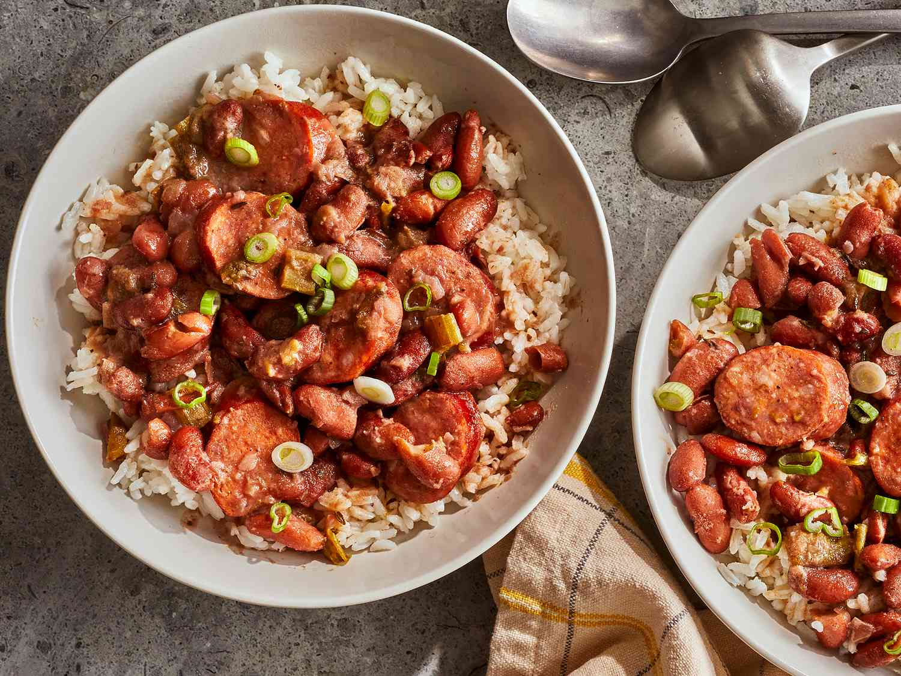

Balsamic Bruschetta

Description
Bruschetta is an Italian appetizer with a base of toasted or grilled bread. The bread can be served with either topping on the side or spooned on top. The follow recipe provides the steps to preparing a delicious tomato and basil based topping to spoon on top of the bread and served as a delightful finger food.
Ingredients
- 1 loaf French bred, cut into 1/4-inch slices
- 1 tbsp extra-virgin olive oil
- 8 roma (plum) tomatoes, diced
- 1/3 cup chopped fresh basil
- 1 ounce Parmesan cheese, freshly grated
- 2 cloves garlic, minced
- 1 tbsp balsamic vinegar
- 2 tsp extra-virgin olive oil
- 1/4 tsp kosher salt
- 1/4 tsp freshly ground black pepper
Steps
- Gather all ingredients. Preheat the oven to 400 degrees F (200 degrees C).
- Brush bread slices on both sides lightly with 1 tablespoon oil and place on large baking sheet. Toast bread until golden, about 5 to 10 minutes, turning halfway through.
- Meanwhile, toss together tomatoes, basil, Parmesan cheese, and garlic in a bowl.
- Mix in balsamic vinegar, 2 teaspoons olive oil, kosher salt, and pepper.
- Spoon tomato mixture onto toasted bread slices.
- Serve immediately and enjoy!